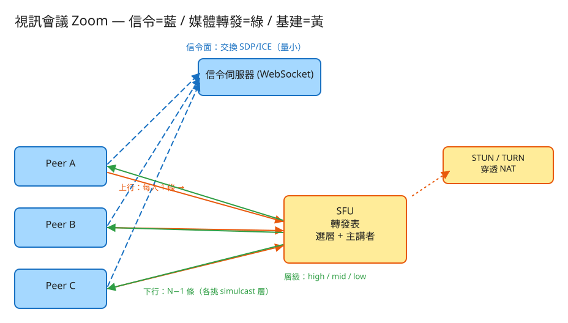

B 即時連線/同步 看故事就懂 輕鬆讀 30 分鐘
你每天用的 Zoom、Google Meet、Teams，背後在解一個問題：怎麼讓一群人同時看到、聽到彼此？
兩個人視訊很簡單——就像兩支對講機直接連起來。但人一多就麻煩了： 10 個人的會議，每個人都要看到另外 9 個人的畫面，影像要從哪裡來、走哪條路、誰負責搬運？這就是這題的核心。
在搞懂「一群人」之前，先看「兩個人」——這是一切的基礎。
視訊也一樣，分成清楚的兩段：
這個交換名片、握手講好怎麼連的過程，工程上叫做交換 SDP（我支援什麼格式）和 ICE（我可以從哪些路連到你）。名字先記個印象就好。
💭 停一下：信令伺服器明明幫忙「牽線」了，為什麼影像不也順便經過它，要讓兩邊直接傳？
「兩個人」搞懂了，現在進入正題：一群人。整件事就是闖 4 關，一關一關來。
每個人加入會議時，都要先跟其他人（或跟轉播中心）交換名片、講好怎麼連：我用哪種影像格式、我的網路位址在哪、走哪條路連得到我。
👉 重點：這一關「只在加入的那幾秒」忙碌，講好之後就閒下來了。所以信令伺服器很輕鬆，它從來不負責搬影像。
10 個人開會，每個人都要看到另外 9 個人。影像怎麼走？這裡有三種走法，選錯了系統就垮。
大房間幾乎都選走法 B（SFU 轉播中心）：每人只上傳一份，中心只負責「轉發」不做「合成」，又快又省力。
會議裡有人用光纖（網路超快），有人在捷運上（網路爛）。同一份高清影像送給捷運上的人，他一定卡到爆。怎麼辦？
這個「同時上傳多種畫質、讓每個人各取所需」的招數叫 simulcast。 關鍵好處：一個網路爛的人，不會拖垮整場會議——他自己收糊的，別人照樣看高清。網路一回復，又自動升回高畫質。
10 個人的九宮格，眼睛該看哪？系統會幫你決定。
這叫 active speaker（主講者偵測）。順帶一提：被放大的主講者，通常也會優先收到高畫質（反正大家在看他）。
工程上的「取捨」聽起來很抽象。換個方式記：這個系統最怕三件事，每個設計都是為了避開某個「怕」。

✏️ 用 Excalidraw 開啟編輯（diagram.excalidraw）白話導讀，分兩條線看：
看完上面，這些詞你其實都已經懂了，這裡只是把「工程術語 ↔ 白話」對起來，Part 2 會用到：
| 工程術語 | 白話解釋 |
|---|---|
| 信令 (Signaling) | 開會前「交換名片、講好怎麼連」的牽線過程 |
| SDP | 名片內容：「我支援哪種影像格式」 |
| ICE candidate | 「我可以從哪幾條路被連到」的候選路徑 |
| WebRTC | 瀏覽器內建的「即時音視訊」技術，上面這些都是它的一部分 |
| SFU（轉播中心） | 每人上傳一份，伺服器「轉發」給其他人（主流） |
| MCU（混流中心） | 把大家影像「合成一張九宮格」再送回，省下行但很吃力 |
| Mesh / P2P（全員互連） | 每人直連每人，人一多就爆，只適合 2~3 人 |
| simulcast | 同時上傳高/中/低三種畫質，弱網的人自動收低的 |
| active speaker | 自動偵測「正在說話的人」並放大 |
| STUN | 問「我在網路上長怎樣」，幫忙打洞直連 |
| TURN | 直連真的不通時，找一個中繼站幫你轉（最後手段） |
| NAT | 路由器/防火牆把你藏在後面，導致外面直接連不到你 |
| 延遲 (Latency) | 從你開口到對方聽到的時間差 |
| API | 系統之間講好的「點餐單」格式：你給我什麼、我回你什麼 |
| 水平擴展 | 一台轉播中心不夠，就「多擺幾台一起分擔」 |
這題最該感受的，是「頻寬（網路水管粗細）」這個數字的形狀（數字不必背）：
| 估什麼 | 大概數字 | 所以呢？ |
|---|---|---|
| 一路高清影像多大 | 720p 約 1.5 Mbps（每秒約 1.5 百萬位元） | 影像很「重」，是主要負擔 |
| 每個人上傳幾份 | 用 SFU 只上傳 1 份（含高中低三層約 2.5 Mbps） | 上傳壓力固定，不會因人多而暴增 |
| 50 人會議，轉播中心要轉多少 | 每人收 49 路 → 中心出口約 1 Gbps（每秒 10 億位元） | 瓶頸在「中心的出口水管」 |
| 牽線（信令）的量 | 只有加入時幾 KB，之後幾乎是 0 | 牽線超輕，可跟影像分開擴展 |
💭 停一下：用「全員互連」的話，為什麼 10 個人就會先讓使用者的電腦受不了，而不是伺服器？
記住幾張關鍵「點餐單」：
① 加入會議
POST /api/join 給我：{ 房間, 名字 }
我回：{ 你的編號, 目前房裡有誰 }就像走進會議室先報到，櫃台給你一個名牌，並告訴你「現在房裡有哪些人」。
② 交換名片（SDP / ICE）← 牽線的核心
POST /api/sdp 給我：{ 我是誰、要給誰、我的影像格式 }
POST /api/ice 給我：{ 我是誰、要給誰、我可以從哪條路被連到 }信令伺服器只是幫你把名片轉交給對方，它不看內容、不碰影像，純粹「傳話」。
③ 回報「我網路只剩多少」→ 中心幫我挑畫質
POST /api/bandwidth 給我：{ 我是誰, 我現在頻寬只剩 400 }
我回：{ 幫你切到 "中畫質" }這就是 simulcast 的自動降階：你網路變差，中心就把你那一路切到比較糊的層，先保不卡。
④ 回報「我現在音量多大」→ 中心選出主講者
POST /api/audio 給我：{ 我是誰, 我音量 0.83 }
我回：{ 現在主講者是你 }大家都回報音量，中心挑最大聲的當主講者，再通知所有人去放大他。
房間簿：每間會議室一列（房號、建立時間）。成員簿：每個參加者一列
編號、在哪間房、名字、目前頻寬、最近音量。
記「誰要傳給誰、是 SDP 還是 ICE、內容、時間」。 就像一個公司信箱：你的名片先放著，對方上線了再來取走。這就是「信令中繼」。
記 誰上傳的影像（publisher）、要轉給誰看（subscriber）、用哪一層畫質（高/中/低）。
| 哪裡會塞車 | 怎麼拓寬 |
|---|---|
| 小房間還架轉播中心，太浪費 | 2~3 人直接兩邊互連，連中心都省了 |
| 轉播中心出口水管被塞爆（~Gbps 級） | 幫弱網的人降畫質少送一點、限制同時收的高清路數 |
| 萬人演講（webinar），影像流爆炸 | 只訂主講者+少數可見的人的影像，其他人的先暫停不收 |
| 一台轉播中心撐不住一場大會 | 多台中心串接：跨機只傳一份，到了當地再分送（級聯） |
| 跨國開會，地球另一端很遠很慢 | 每個人連離自己最近的那台中心，中心之間再互聯 |
「Part 1 的三個怕」是核心取捨。這裡補幾個常被面試官追問的：
讀十遍不如玩一遍。這題有一個真的可以跑的小程式，讓你親眼看到「牽線 + 轉播中心決策」：
# 啟動（在這題的 demo 資料夾裡）
cd demo
php -S localhost:8030 -t public
# 然後瀏覽器打開 http://localhost:8030玩過 demo 了，來掀開引擎蓋看看「那幾關到底是哪幾段程式做的」。 好消息：這題的核心其實全擠在一個小檔（Sfu.php）裡，剛好對應前面講的四關工作。 不用會 PHP，我把程式翻成白話、只留關鍵那幾行，看註解就懂。
第一關，幫兩個人「交換名片」。中心不看內容、不碰影像，純粹把你的名片放進對方的信箱，等對方來取走。
function 轉交名片(房間, 從誰, 給誰, 種類, 內容) {
if (從誰 或 給誰 不在這房間) 報錯;
// 把名片丟進「給誰」的信箱，等他上線來取
對方信箱[給誰].加入({ 從誰, 種類:'sdp'或'ice', 內容, 時間 })
return 已投遞;
}
function 取走信箱(房間, 我是誰) {
我的信件 = 信箱[我是誰]
信箱[我是誰] = 空的 // ← 取走即清空，模擬「投遞出去」
return 我的信件
}這就是前面說的「交換名片、握手講好怎麼連」。SDP（我支援什麼格式）和 ICE（我可以從哪條路被連到）都是同一個轉交動作，只差「種類」欄不同。中心像公司收發室，只負責傳話，從不拆開影像。
每當有人加入或頻寬改變，中心就重建一張轉發表：房裡每個上傳者的影像，要轉給其他每個人看（不轉給自己）。
function 重建轉發表(房間) {
表 = 空的
每個 上傳者 in 房裡的人:
每個 觀看者 in 房裡的人:
if (上傳者 == 觀看者) 跳過 // ← 不轉發給自己
表.加入({
上傳者, 觀看者,
層: 依頻寬挑層(觀看者的頻寬) // ← 每一列各挑各的畫質！
})
房間.轉發表 = 表
}10 個人就會有很多列：「A 的影像 → 轉給 B（高）、轉給 C（低）…」。 重點：每一列可以是不同畫質，因為每個觀看者網路狀況不同。但不管表多長，每個人仍只上傳一份影像——這就是轉播中心（SFU）省力的精髓。
這是 simulcast 的心臟。每個人同時上傳高/中/低三層，中心幫每個觀看者挑「他頻寬扛得住的最高那層」。
三層的需求頻寬 = { 高:1500, 中:500, 低:150 } // kbps（由高到低）
function 依頻寬挑層(可用頻寬) {
// 白話：依訂閱者頻寬，由高層往低層試，挑「頻寬扛得住的最高那層」
if (可用頻寬 >= 1500) return '高'; // 頻寬夠 → 給高畫質
if (可用頻寬 >= 500) return '中'; // 中等 → 給中畫質
return '低'; // 再差也保底給低（總比全黑好）
}就是這幾行 if：依訂閱者頻寬，頻寬 > 高層門檻給高、> 中層門檻給中、否則給低。
捷運上的人頻寬掉到 400 → 自動切「低」，畫面糊一點但不卡；網路一回復又自動升回「高」。
關鍵好處：一個弱網的人不會拖垮整場，他自己收糊的，別人照樣看高清。
💭 停一下：為什麼頻寬連「低」（150）都不到，還是要硬給他「低」，而不是乾脆不送？
每個人的麥克風持續回報自己的音量，中心每次收到就重選一次主講者——挑當下音量最大的那個。
function 回報音量(房間, 我是誰, 音量) {
我的音量 = 夾在 0~1 之間(音量) // 防呆：超過範圍先夾住
房間.主講者 = 選最大聲的(房間)
}
function 選最大聲的(房間) {
最佳 = null; 最大音量 = 0
每個 人 in 房裡的人:
if (這人的音量 > 最大音量) {
最大音量 = 這人的音量
最佳 = 這人
}
return 最佳 // ← 全部都是 0（沒人說話）→ 回 null
}就是一個「挑最大值」的迴圈。誰音量最大就是主講者，通知大家把他的畫面放大（通常也優先給他高畫質）。
全場靜音時回 null＝「沒人說話」，畫面就不特別放大誰。這正是「智慧會議室鏡頭自動對準發言人」那個比喻。
| 關卡（前面講的） | 哪段程式 | 關鍵那段 |
|---|---|---|
| ① 交換名片（信令） | 轉交名片 / 取走信箱 | 丟進對方信箱、取走即清空 |
| ② 轉播中心轉發 | 重建轉發表 | 每個上傳者 × 每個觀看者（不含自己） |
| ③ 依頻寬選層（simulcast） | 依頻寬挑層 | ≥1500 高 / ≥500 中 / 否則低 |
| ④ 主講者（active speaker） | 選最大聲的 | 挑音量最大值的迴圈 |
👉 重點：這個 demo 不傳真的影像，它模擬的是「決策」——轉發表怎麼建、依頻寬怎麼挑層、怎麼選主講者。 真實系統會把「JSON 檔 + 迴圈」換成 WebRTC + 正式的 SFU 媒體伺服器（mediasoup / Janus）來真的搬運影像， 但上面這幾段判斷邏輯（信令中繼、轉發表、選層、選主講者）一字都不用改。所以讀懂這個小 demo，你就讀懂了這題的核心。
先不要看答案，自己用講給朋友聽的方式回答看看（講得出來才是真的懂）：
視訊會議 = 先「講好怎麼連」，再「找轉播中心幫大家轉影像」。
4 個關卡：① 交換名片握手（信令 SDP/ICE）→ ② 找轉播中心 SFU 轉影像（每人只上傳一份）→ ③ 網路差的人自動收糊畫面（simulcast）→ ④ 正在說話的人自動放大（active speaker）。
3 個怕：怕卡頓（影像走最短路、掉了不重傳）、怕一個人爆量拖垮全場（用 SFU + simulcast 隔離）、怕連不上（STUN 打洞、不行就 TURN 中繼）。
工程細節一句話：瓶頸在「中心出口頻寬」不在信令 → 用「點餐單(API)」交換名片、回報頻寬挑畫質、回報音量選主講者 → 用「轉發表」決定誰的影像轉給誰、各挑畫質 → 大會議靠多台中心串接、分頁訂閱、就近連線來拓寬。
想看更精簡、面試速查用的版本？👉 前往完整版（同樣內容的工程速查格式）。